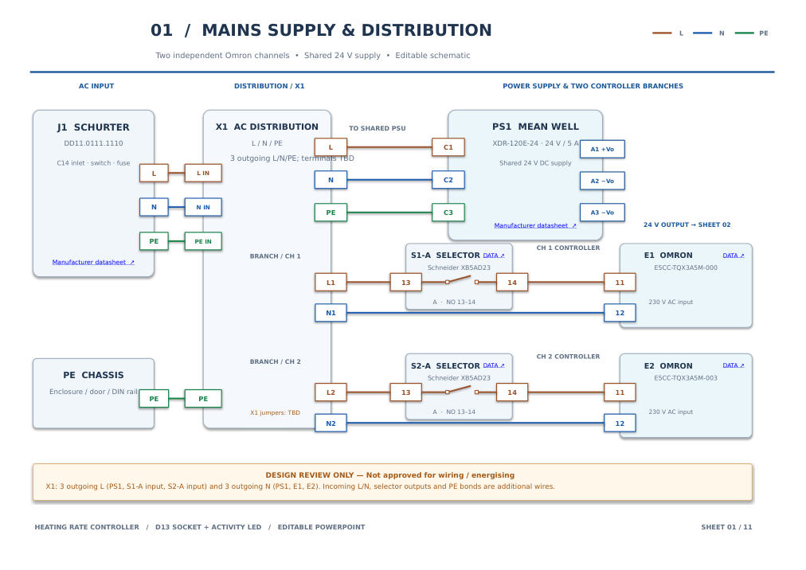
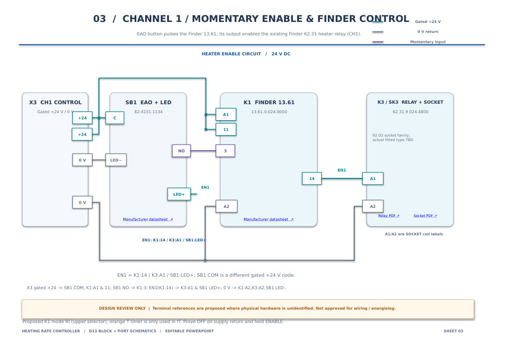
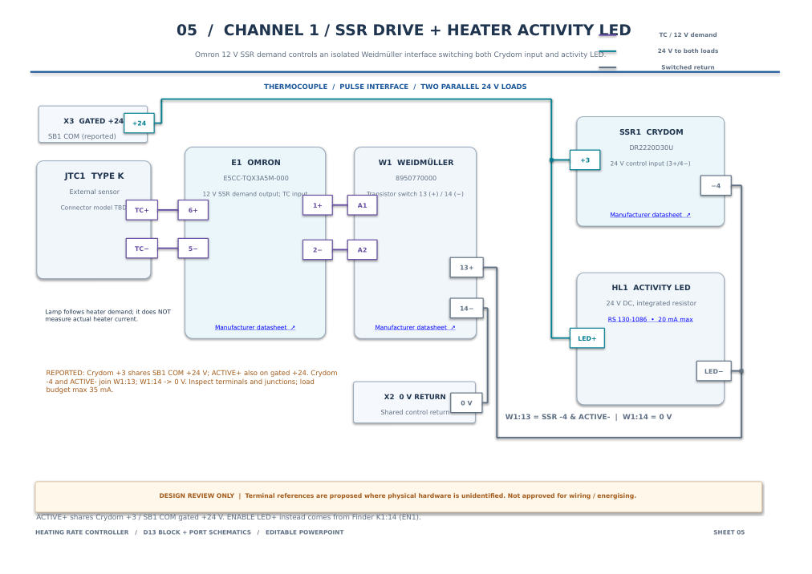
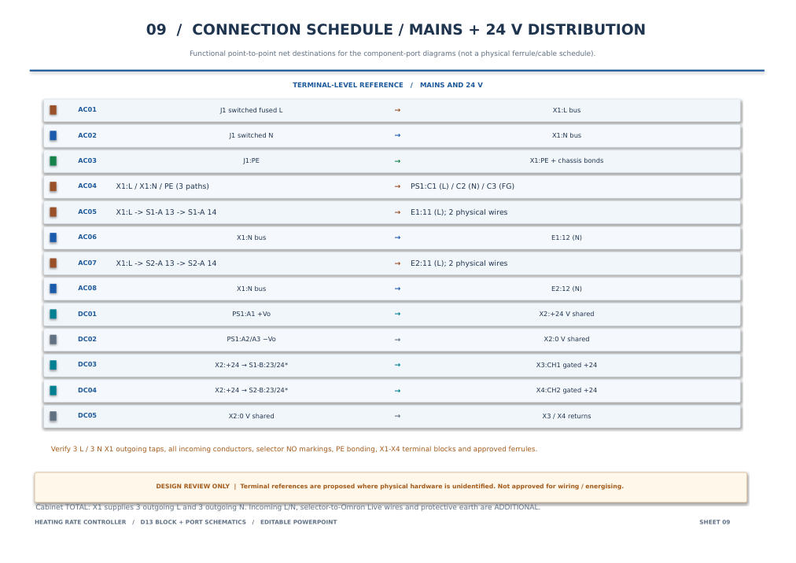
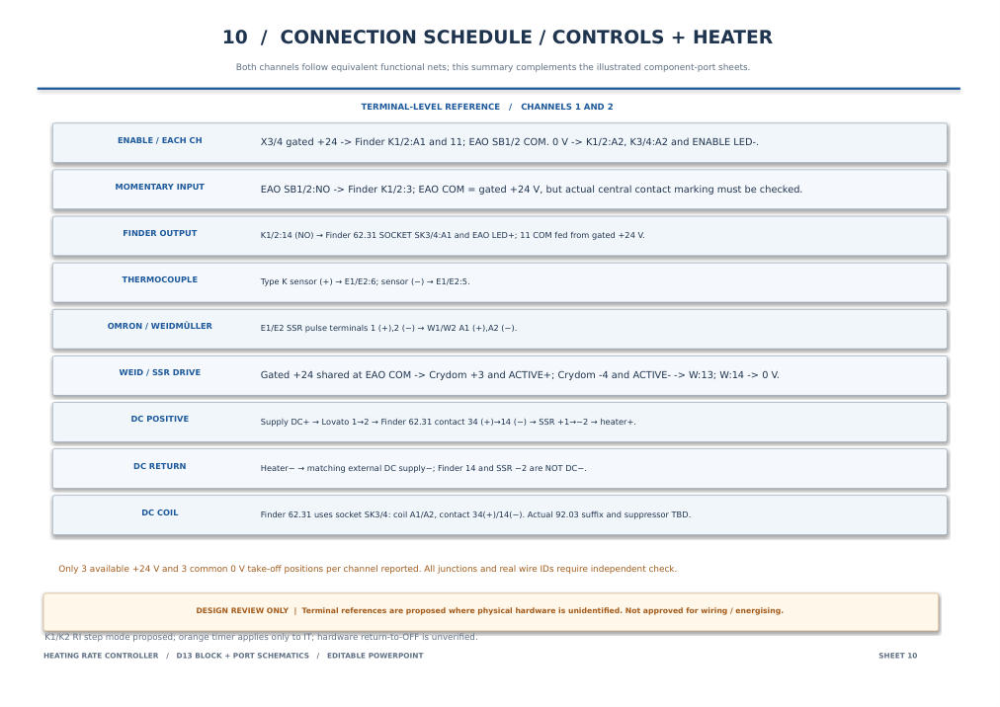
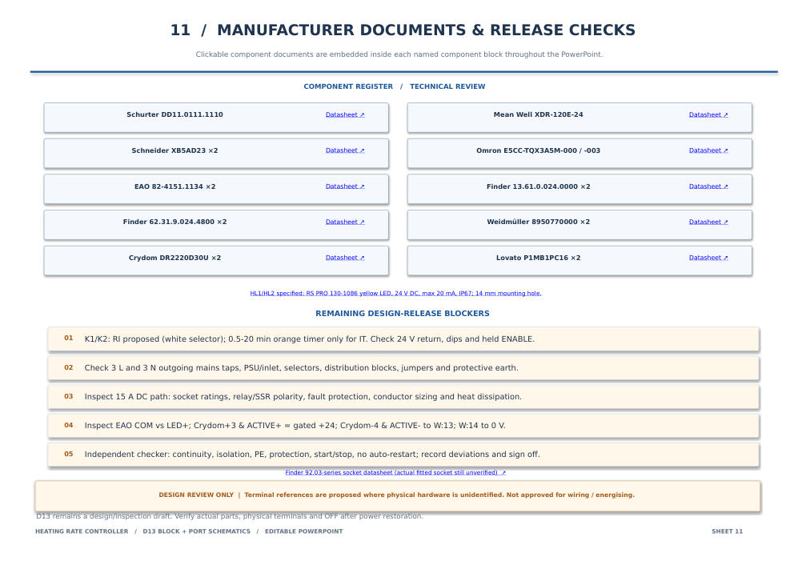

D13 drawing archive
Eleven-sheet drawing set made by editing the original D12 PowerPoint drawings, not replacing them with newly styled block diagrams. Original shapes, line routing, colours, sheet sequence, manufacturer links and overall layout are retained. Corrected terminals and connection annotations are incorporated in their original schematic positions.
What changed from D12?
| Original sheets | D13 amendments |
|---|---|
| 01 · Mains | Three Live outgoing destinations and three Neutral outgoing destinations for the whole cabinet, plus separate incoming feed, controller switched-Live leads and protective earth. |
| 02 · Shared 24 V | Three reported +24 V and three 0 V available distribution take-off positions per channel. Exact block allocation and approved junction methods remain to check. |
| 03–04 · Finder enable | Replace incorrect Finder 13.61 terminal markings L/+ and N/− with actual A1 and A2; distinguish EAO pushbutton COM from its illuminated LED+; propose RI mode and require restart tests. |
| 05–06 · SSR drive | Label Crydom control +3 as sharing the gated +24 V / EAO COM, ACTIVE+ on that same rail; Crydom −4 and ACTIVE− join Weidmüller 13, while Weidmüller 14 returns to 0 V. Channel 2 remains individually unverified. |
| 07–08 · Heater load | Keep original high-current power path drawings and emphasize Finder 62.31 34(+)→14(−) and Crydom +1→−2 are the switched POSITIVE load path, not DC 0 V. |
| 09–11 · Schedules | Revise mains, controls, topology notes, unresolved configuration settings and inspection priorities. |
Selected pages from the exact revised PowerPoint
Preview images rendered from D13, not a different concept drawing. The downloadable PDF and PowerPoint contain all eleven sheets.

01 · Mains / distributionOriginal layout and wiring preserved

03 · Finder enable, channel 1Actual Finder supply terminal labels

05 · Crydom and ACTIVE LEDControl wiring annotated

09 · AC / 24 V scheduleCabinet distribution counts and terminals

10 · Control scheduleUpdated relay and SSR paths

11 · Release checksCommissioning and inspection hold points
Independent inspection
Use the wire-by-wire reconciliation register alongside these drawings. The checker must compare actual terminal stamps and conductor terminations with the diagram; record deviations, uninspected points, tests and signatures. Do not infer approval from the document revision number.
Original D12 files remain available as historical design sources: D12 editable PowerPoint and D12 PDF. They have not been overwritten.